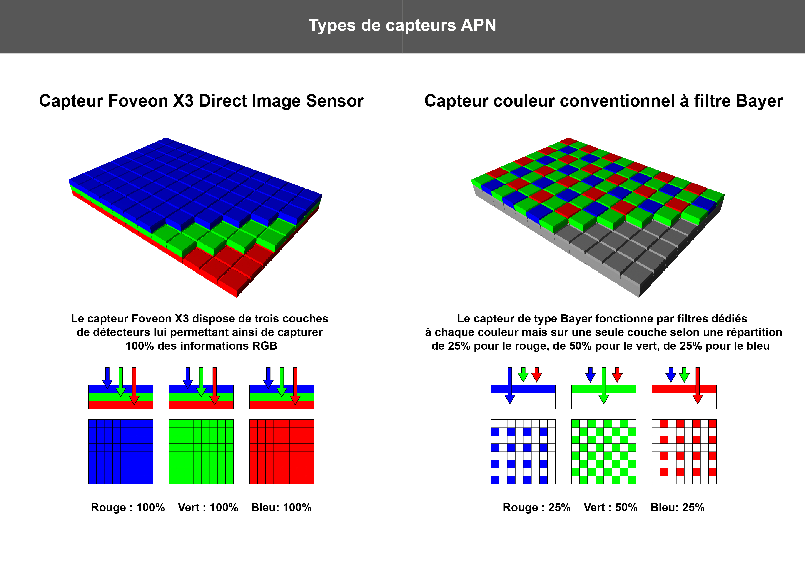

Le capteur est le composant électronique qui réagit à la lumière. Voici ses caractéristiques principales :
Pour transformer l'électricité en fichier binaire (0 et 1), l'appareil suit ce processus précis :
Une image numérique standard utilise le système RVB (Rouge, Vert, Bleu) :
Le fichier image contient également des informations textuelles invisibles sur la photo :
Note : En résumé, le passage est le suivant : Lumière → Électricité → Pixels → Fichier binaire.

Cliquez sur l'image à droite pour consulter l'article Wikipédia complet sur la photographie numérique.
Pour voir les metadonnées EXIF avec plus de précision cliquez sur le boutton de la la dernière page en haut